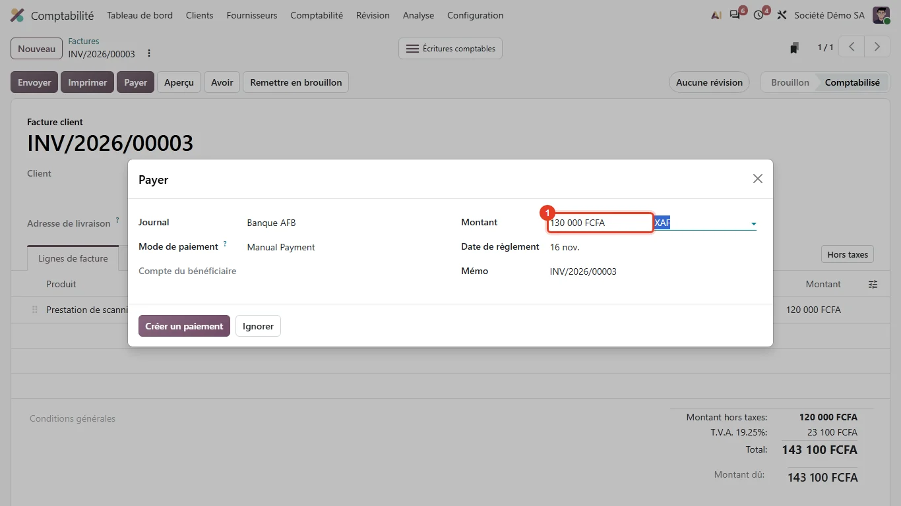
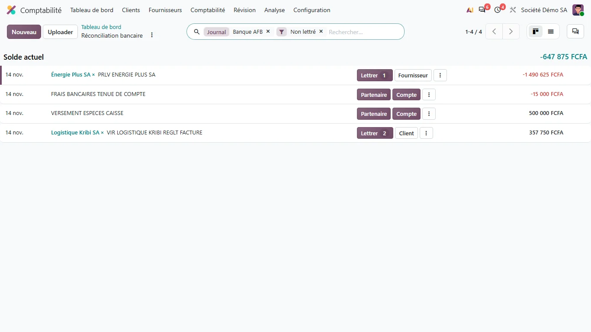

Enregistrer une retenue à la source sur un encaissement
Objectif. Solder la facture d'un client habilité à retenir la TVA ou l'IR, en portant la retenue sur le bon compte.
Menu Odoo 15Comptabilité > Clients > Factures (Enregistrer un paiement)
Étapes
- Ouvrez la facture et cliquez sur Enregistrer un paiement.
- Saisissez le montant réellement reçu (1), hors retenue.
- Dans Odoo 15, la zone Différence de paiement apparaît : choisissez Marquer comme entièrement payé.
- Choisissez le compte de la retenue : TVA retenue à la source ou acompte IR, selon le plan de la société, et le libellé « Retenue à la source ».
- Créez le paiement et conservez l'attestation de retenue du client.
- Si le virement arrive par la banque, la retenue peut aussi être portée au rapprochement bancaire (bouton Compte).


À vérifier
- La retenue est sur le compte de TVA ou d'IR retenu à la source, pas sur un compte d'attente.
- Le client figure sur la liste des clients habilités à retenir.
À éviter
- Ne laissez pas la facture partiellement payée : la retenue doit la solder.
Exercice
Encaissez 130 000 sur une facture de 143 100 et portez la différence en retenue.